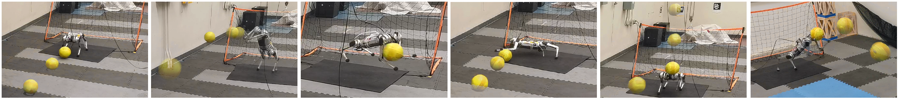

Xiaoyu Huang (2) Zhongyu Li (1) Yanzhen Xiang (1) Yiming Ni (1) Yufeng Chi (1) Yunhao Li (1) Lizhi Yang (1) Xue Bin Peng (3) and Koushil Sreenath (1)
(1) Georgia Institute of Tecnology(2) University of California, Berkeley(3) Simon Fraser University

Abstract
We present a reinforcement learning (RL) framework that enables quadrupedal
robots to perform soccer goalkeeping tasks in the real world. Soccer
goalkeeping using quadrupeds is a challenging problem, that combines highly
dynamic locomotion with precise and fast non-prehensile object (ball)
manipulation. The robot needs to react to and intercept a potentially flying
ball using dynamic locomotion maneuvers in a very short amount of time,
usually less than one second. In this paper, we propose to address this
problem using a hierarchical model-free RL framework. The first component
of the framework contains multiple control policies for distinct locomotion
skills, which can be used to cover different regions of the goal. Each
control policy enables the robot to track random parametric endeffector
trajectories while performing one specific locomotion skill, such as jump,
dive, and sidestep. These skills are then utilized by the second part of
the framework which is a high-level planner to determine a desired skill
and end-effector trajectory in order to intercept a ball flying to different
regions of the goal. We deploy the proposed framework on a Mini Cheetah
quadrupedal robot and demonstrate the effectiveness of our framework for
various agile interceptions of a fast-moving ball in the real world.
@article{
A1GoalkeepingHuang2022,
doi = {10.48550/ARXIV.2210.04435},
url = {https://arxiv.org/abs/2210.04435},
author = {Huang, Xiaoyu and Li, Zhongyu and Xiang, Yanzhen and Ni, Yiming and Chi, Yufeng and Li, Yunhao and Yang, Lizhi and Peng, Xue Bin and Sreenath, Koushil},
keywords = {Robotics (cs.RO), Artificial Intelligence (cs.AI), Systems and Control (eess.SY), FOS: Computer and information sciences, FOS: Computer and information sciences, FOS: Electrical engineering, electronic engineering, information engineering, FOS: Electrical engineering, electronic engineering, information engineering},
title = {Creating a Dynamic Quadrupedal Robotic Goalkeeper with Reinforcement Learning},
publisher = {arXiv},
year = {2022},
copyright = {arXiv.org perpetual, non-exclusive license}
}